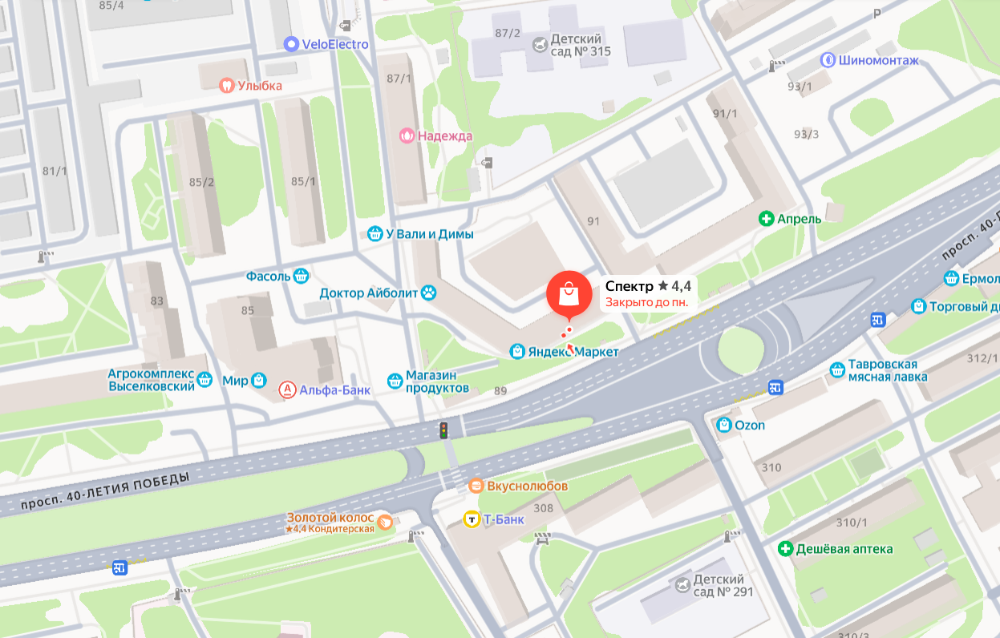
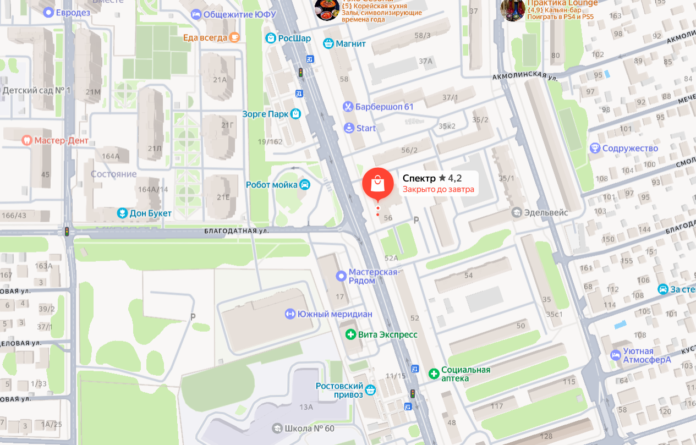
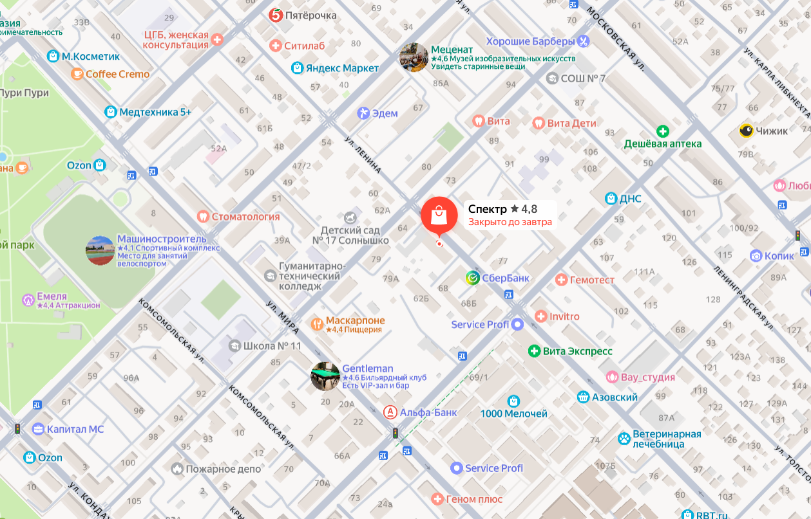
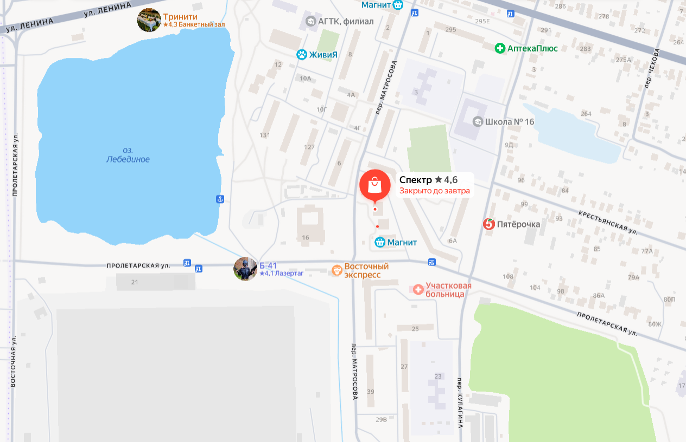
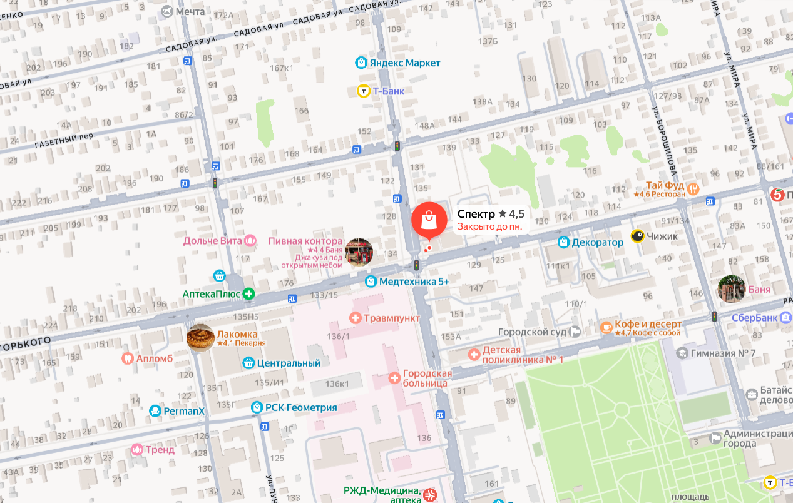
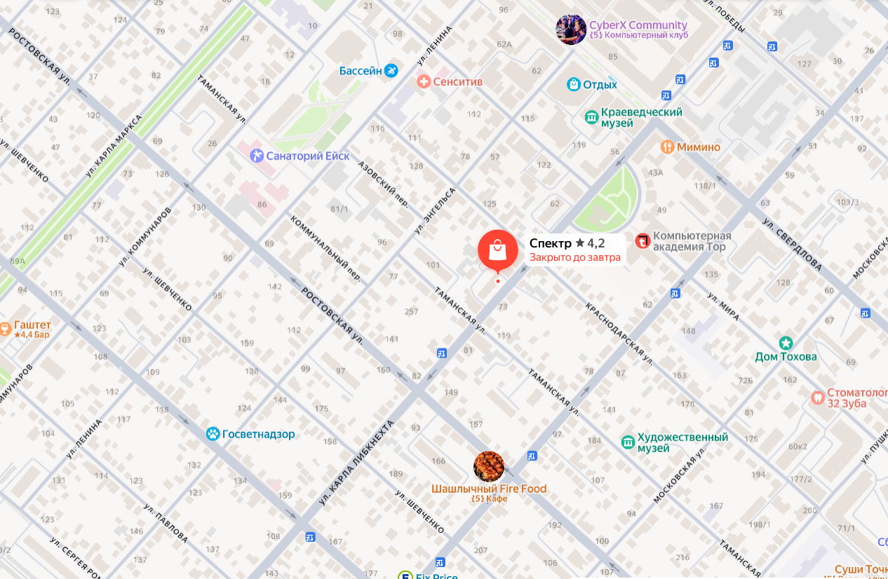

Открыть карту ↗Ростов-на-Дону
Александровка
- Адрес
- проспект 40-летия Победы, 89
- Телефон
- 8 988 253 03 44
- Режим работы
- Пн–Пт: 09:00–18:00
Сб: 09:00–14:00
Вс: выходной
Посетите ближайший салон «Спектр»: покажем образцы, поможем выбрать профиль и рассчитаем стоимость конструкции.
Выберите регион или найдите ближайший офис через поиск в верхней части страницы.

Открыть карту ↗
Открыть карту ↗
Открыть карту ↗
Открыть карту ↗
Открыть карту ↗
Открыть карту ↗Измените запрос или выберите другой регион.